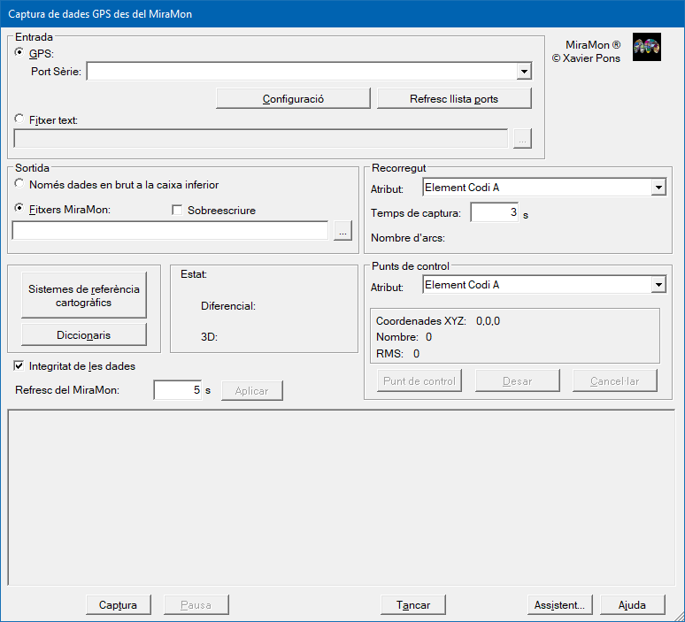

-
 GPSMM: Captura de dades GPS en temps real
GPSMM: Captura de dades GPS en temps real
GPSMM: Captura de dades GPS en temps real| Presentació | Caixa de diàleg de l'aplicació |
Aquesta aplicació està destinada a la visualització en pantalla, a la finestra principal del MiraMon, de dades enviades per un dispositiu GPS/GNSS en temps real. Si no es té necessitat d'obtenir les dades en temps real, sol ser més pràctic descarregar-les posteriorment a la seva adquisició des del format del dispositiu receptor. Aquest format sol ser el format propietari de Garmin (en els dispositius d'aquesta marca), que es pot descarregar des del receptor (en post-procés, no en temps real) amb l'aplicació GarminMM, o el format obert GPX, disponible actualment en molts receptors, telèfons mòbils, etc. La importació del format GPX es pot efectuar amb l'aplicació GPXMM o amb l'aplicació GDALMM; en aquest darrer cas, es pot ampliar la informació sobre les particularitats del tractament que fan les llibreries GDAL en la gestió de fitxers GPX a https://gdal.org/en/stable/drivers/vector/gpx.html.
Cal recordar que des de la pestanya "Gestió obertura fitxers" de la caixa de diàleg que es permet obrir des del menú "Ajuda | Configurar paràmetres" es pot seleccionar per quina via (codi intern [codi del GPXMM] o GDAL) es vol realitzar l'obertura de fitxers GPX en cas que, en comptes d'importar-los es vulguin visualitzar directament a l'aplicació principal del MiraMon.
La majoria de receptors GPS/GNSS suporten el protocol de comunicacions estàndard NMEA. A partir d'aquest protocol el GPS envia un flux constant de dades a l'ordinador. El MiraMon captura aquestes dades i les converteix a un fitxer de línies que es representa a temps real sobre la cartografia que tinguem en pantalla (ortofoto, mapes topogràfics, etc). El MiraMon posiciona la vista de manera adient en funció la posició i del moment de l'estació (map moving). També mostra en tot moment informació de l'estat del seguiment GPS.
Les coordenades són enviades pel GPS en longitud,latitud, i sovint l'aparell està configurat per subministrar les dades en el dàtum WGS84. No obstant, alguns aparells permeten a l'usuari triar un altre dàtum. El MiraMon es pot configurar per a treballar amb els dàtums més habituals que ofereixen aquests GPS; així i tot es recomana, si més no durant l'execució de l'aplicació, de configurar el GPS per treballar amb WGS84, i deixar que el MiraMon transformi les coordenades al sistema de referència (projecció, dàtum, etc) de la cartografia de sortida, un procés que duu a terme amb més exactitud que el que és habitual en els receptors GPS ja que, gràcies a l'acurat model geodèsic del programa, pot usar les transformacions òptimes a cada zona.
L'aplicació també pot generar un punt d'interès (waypoint) com a mitjana d'un cert nombre d'adquisicions o núvol de punts, tot reduint progressivament l'error i estimant l'RMS del conjunt d'adquisicions.
Gairebé tots els models de les diferents marques de GPS tenen el protocol de transmissió NMEA. Consulteu la documentació tècnica del receptor emprat per a confirmar-ho.
Per a llegir les coordenades a temps real cal tenir en compte els següents detalls:
Com que aquesta aplicació només permet la connexió d'un dispositiu simultani, no s'ha considerat necessària l'existència d'una aplicació consola per a automatitzar descàrregues massives, ni l'existència d'una sintaxi en línia de comanda. En conseqüència, la caixa de diàleg actua d'aplicació única (i també per això no existeix una aplicació wGPSMM.exe).
 |
| Caixa de diàleg del GPSMM |